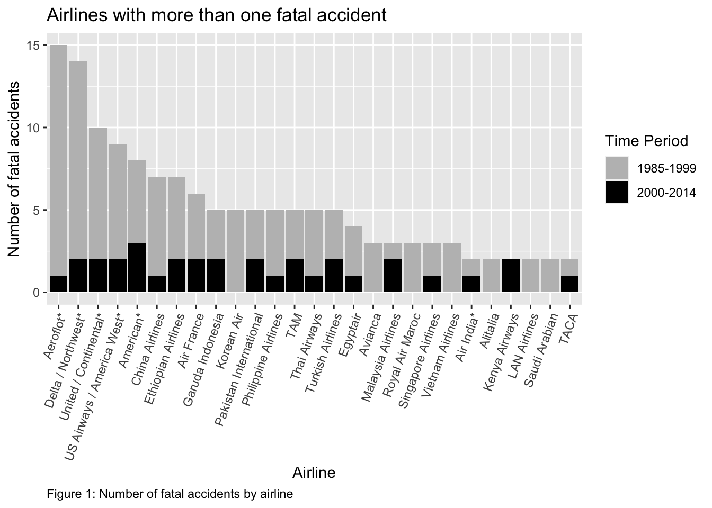

Assessment of safety in the aviation industry to boost client confidence
Data
Visualizations
Author
Ronald Bentil
Published
March 25, 2023
OVERVIEW
This is a post that will be my Midterm assignment, testing my knowledge and skills acquired in/on Data visualization thus far.
PREAMBLE
In today’s world, air travel has become an essential mode of transportation for millions of people worldwide. While air travel is generally considered safe, accidents do occur from time to time, which can result in loss of life and damage to property. In this context, understanding the relationship between the number of departures and the incidence of fatal accidents may provide valuable insights into the safety of air travel.
In this post, data collected on some airlines for about 30 years (1985-1999 and 2000-2014 periods) will be analyzed to assess aviation safety.
Criteria for choice of parameters used in assessment: The data set had several airlines so airlines with more than one fatal accident within the period were selected for analysis.
DATA
The data set (Table 1) I will be using for my analyses and visualizations is already existent in R studio as package. Source: Aviation Safety Network.
A data dictionary has been added to provide definitions for the various headers in the data set. Table 2 below is the data dictionary that defines attributes in the data:
library(knitr)SumFatal_accidents <-apply( airlinesafety[c("fatal_accidents_85_99", "fatal_accidents_00_14")], MARGIN =2, FUN =function(x) {c(Average =round(mean(x), digits =2), SD =round(sd(x), digits =2), quantile(x, probs =c(.25, .5, .75, 1)),round(100*mean(x >1), digits =2) ) })rownames(SumFatal_accidents) <-c("Average", "Standard deviation", "Q1 (<25%)", "Median", "Q3 (<75%)", "Max", "Percentage of airlines with more than one fatal accident")kable(round(SumFatal_accidents, digits =2), align ="c", caption ="Table 3: Summary of fatal accidents") %>%kable_styling()
Table 3: Summary of fatal accidents
fatal_accidents_85_99
fatal_accidents_00_14
Average
2.18
0.66
Standard deviation
2.86
0.86
Q1 (<25%)
0.00
0.00
Median
1.00
0.00
Q3 (<75%)
3.00
1.00
Max
14.00
3.00
Percentage of airlines with more than one fatal accident
41.07
21.43
Table 3 shows a comparison in the number of fatal accidents that have occurred between the two time periods and suggests a decline in recent times (2000-2014) compared to earlier (1985-1999). The pattern is shown for individual airlines in Figure 1.
Code
suppressPackageStartupMessages(library(reshape2))airlinesafety <-read.csv("Airline safety datset.csv")airlines_fatal <- airlinesafety %>%filter(fatal_accidents_85_99 + fatal_accidents_00_14 >1)fatal_data <-data.frame(Airline = airlines_fatal$airline,Fatal_85_99 = airlines_fatal$fatal_accidents_85_99,Fatal_00_14 = airlines_fatal$fatal_accidents_00_14)fatal_data_melt <-melt(fatal_data, id.vars ="Airline")suppressMessages({ fatal_data_summary <- fatal_data_melt %>%group_by(Airline, variable) %>%summarize(total =sum(value)) fatal_data_summary <- fatal_data_summary %>%group_by(Airline) %>%summarize(total =sum(total)) %>%arrange(desc(total)) %>%pull(Airline)})fatal_data_melt$Airline <-factor(fatal_data_melt$Airline, levels = fatal_data_summary)ggplot(fatal_data_melt, aes(x = Airline, y = value, fill = variable)) +geom_bar(stat ="identity", position ="stack") +labs(title ="Airlines with more than one fatal accident",x ="Airline",y ="Number of fatal accidents",caption ="Figure 1: Number of fatal accidents by airline", caption.position ="left") +scale_fill_manual(name ="Time Period",values =c("grey", "black"),labels =c("1985-1999", "2000-2014")) +theme(axis.text.x =element_text(angle =70, hjust =1),plot.caption =element_text(hjust =0))

The dataset provides information on available seat kilometers flown each week. Based on this I explore a comparable quantity that is weekly departures. In this context, understanding the relationship between the number of departures and the incidence of fatal accidents may provide insights into the safety of air travel.
The scatter plot shows a general trend of increasing fatal accidents as the number of weekly departures increases, and the correlation coefficient of 0.65 indicates a moderately strong positive relationship between the two variables. This suggests that airlines with a higher number of weekly departures are more likely to experience fatal accidents, although other factors could also play a role.
However, correlation does not imply causation, and there could be other factors that contribute to the observed relationship. Further analysis would be needed to fully understand the factors that influence fatal accidents in the airline industry.
CONCLUSIONS
The descriptive data don’t precisely tell which airline is the safest for travel. However, the visualizations show that the number of deadly accidents has significantly decreased and has continued to do so. However, the visualizations are observations based on temporal patterns and would require further analysis and inclusion of additional data to make profound conclusions.
Additionally, airlines with a higher number of weekly departures may face more challenges in maintaining the safety of their operations. This could be due to factors such as increased pressure to meet schedules and maintain profitability, as well as the need to manage a larger and more complex fleet of aircraft.
Also, airlines with higher numbers of weekly departures may benefit from investing in additional safety measures and procedures to mitigate the risks associated with their operations. This could include initiatives such as more extensive pilot training programs, regular safety audits, and increased use of technology to monitor and improve operational safety.
Overall, these highlight the importance of maintaining high safety standards in the aviation industry, especially for airlines with larger operations. By prioritizing safety and investing in appropriate measures, airlines cannot only reduce the risk of accidents and fatalities, but also enhance their reputation and build trust with their passengers.
Source Code
---title: "BCB 520- Midterm Portfolio Post"subtitle: "Aviation safety"author: "Ronald Bentil"date: "2023-03-25"categories: [Data, Visualizations]image: "coa-aviation-safety-image.jpeg"code-fold: truecode-tools: truedescription: "Assessment of safety in the aviation industry to boost client confidence"---## OVERVIEWThis is a post that will be my Midterm assignment, testing my knowledge and skills acquired in/on Data visualization thus far. ## PREAMBLEIn today's world, air travel has become an essential mode of transportation for millions of people worldwide. While air travel is generally considered safe, accidents do occur from time to time, which can result in loss of life and damage to property. In this context, understanding the relationship between the number of departures and the incidence of fatal accidents may provide valuable insights into the safety of air travel.In this post, data collected on some airlines for about 30 years (1985-1999 and 2000-2014 periods) will be analyzed to assess aviation safety.Criteria for choice of parameters used in assessment:The data set had several airlines so airlines with more than one fatal accident within the period were selected for analysis. ## DATAThe data set (Table 1) I will be using for my analyses and visualizations is already existent in R studio as package. Source:[Aviation Safety Network](https://r-data.pmagunia.com/dataset/airline-safety).```{r}airlinesafety=read.csv('Airline safety datset.csv', header =TRUE)library(knitr)invisible(library(kableExtra))kable(airlinesafety, caption ="Table 1: Airline Safety Data") %>%kable_styling()```A data dictionary has been added to provide definitions for the various headers in the data set. Table 2 below is the data dictionary that defines attributes in the data:```{r}suppressPackageStartupMessages(library(tidyverse))library(readxl)invisible(library(dplyr))invisible(library(kableExtra))suppressMessages({ airlinesafety_attributes <-read_xlsx("airlinesafetydatadictionary.xlsx") knitr::kable(airlinesafety_attributes, caption ="Table 2: Airline Safety Data Dictionary") %>%kable_styling()})```## VISUALIZATIONS```{r}library(knitr)SumFatal_accidents <-apply( airlinesafety[c("fatal_accidents_85_99", "fatal_accidents_00_14")], MARGIN =2, FUN =function(x) {c(Average =round(mean(x), digits =2), SD =round(sd(x), digits =2), quantile(x, probs =c(.25, .5, .75, 1)),round(100*mean(x >1), digits =2) ) })rownames(SumFatal_accidents) <-c("Average", "Standard deviation", "Q1 (<25%)", "Median", "Q3 (<75%)", "Max", "Percentage of airlines with more than one fatal accident")kable(round(SumFatal_accidents, digits =2), align ="c", caption ="Table 3: Summary of fatal accidents") %>%kable_styling()```Table 3 shows a comparison in the number of fatal accidents that have occurred between the two time periods and suggests a decline in recent times (2000-2014) compared to earlier (1985-1999). The pattern is shown for individual airlines in Figure 1.```{r}suppressPackageStartupMessages(library(reshape2))airlinesafety <-read.csv("Airline safety datset.csv")airlines_fatal <- airlinesafety %>%filter(fatal_accidents_85_99 + fatal_accidents_00_14 >1)fatal_data <-data.frame(Airline = airlines_fatal$airline,Fatal_85_99 = airlines_fatal$fatal_accidents_85_99,Fatal_00_14 = airlines_fatal$fatal_accidents_00_14)fatal_data_melt <-melt(fatal_data, id.vars ="Airline")suppressMessages({ fatal_data_summary <- fatal_data_melt %>%group_by(Airline, variable) %>%summarize(total =sum(value)) fatal_data_summary <- fatal_data_summary %>%group_by(Airline) %>%summarize(total =sum(total)) %>%arrange(desc(total)) %>%pull(Airline)})fatal_data_melt$Airline <-factor(fatal_data_melt$Airline, levels = fatal_data_summary)ggplot(fatal_data_melt, aes(x = Airline, y = value, fill = variable)) +geom_bar(stat ="identity", position ="stack") +labs(title ="Airlines with more than one fatal accident",x ="Airline",y ="Number of fatal accidents",caption ="Figure 1: Number of fatal accidents by airline", caption.position ="left") +scale_fill_manual(name ="Time Period",values =c("grey", "black"),labels =c("1985-1999", "2000-2014")) +theme(axis.text.x =element_text(angle =70, hjust =1),plot.caption =element_text(hjust =0))```The dataset provides information on available seat kilometers flown each week. Based on this I explore a comparable quantity- that is weekly departures. In this context, understanding the relationship between the number of departures and the incidence of fatal accidents may provide insights into the safety of air travel.```{r}library(ggplot2)departures <- airlinesafety %>%group_by(airline) %>%summarise(total_weekly_departures =sum(incidents_00_14)) %>%rename(airline ="airline") # rename airline_name column to airlinefatal_data <- airlinesafety %>%filter(fatal_accidents_85_99 + fatal_accidents_00_14 >1) %>%mutate(total_fatalities = fatal_accidents_85_99 + fatal_accidents_00_14) %>%select(airline, total_fatalities) %>%inner_join(departures, by ="airline")print(ggplot(fatal_data, aes(x = total_weekly_departures, y = total_fatalities)) +geom_point() +labs(title ="Fatal accidents vs. weekly departures",x ="Total weekly departures",y ="Total fatal accidents",caption ="Figure 2: Scatter plot of fatal accidents vs. weekly departures") +theme(plot.caption =element_text(hjust =0, margin =margin(t =10))))``````{r}correlation <-cor(fatal_data$total_weekly_departures, fatal_data$total_fatalities)round_correlation <-signif(correlation, digits =2)print(paste("The correlation coefficient is:", round_correlation))```The scatter plot shows a general trend of increasing fatal accidents as the number of weekly departures increases, and the correlation coefficient of 0.65 indicates a moderately strong positive relationship between the two variables. This suggests that airlines with a higher number of weekly departures may be more likely to experience fatal accidents, although other factors could also play a role.However, correlation does not imply causation, and there could be other factors that contribute to the observed relationship. Further analysis would be needed to fully understand the factors that influence fatal accidents in the airline industry.## CONCLUSIONSThe descriptive data don't precisely tell which airline is the safest for travel. However, the visualizations show that the number of deadly accidents has significantly decreased and has continued to do so. However, the visualizations are observations based on temporal patterns and would require further analysis and inclusion of additional data to make profound conclusions.Additionally, airlines with a higher number of weekly departures may face more challenges in maintaining the safety of their operations. This could be due to factors such as increased pressure to meet schedules and maintain profitability, as well as the need to manage a larger and more complex fleet of aircraft.Airlines with higher numbers of weekly departures may benefit from investing in additional safety measures and procedures to mitigate the risks associated with their operations. This could include initiatives such as more extensive pilot training programs, regular safety audits, and increased use of technology to monitor and improve operational safety.Overall, these highlight the importance of maintaining high safety standards in the aviation industry, especially for airlines with larger operations. By prioritizing safety and investing in appropriate measures, airlines may not only reduce the risk of accidents and fatalities, but also enhance their reputation and build trust with their passengers.